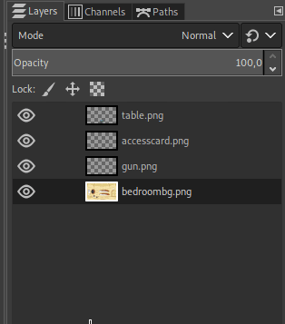
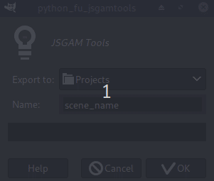

JSGAM-Tools GIMP plug-in
DownloadCopy the jsgam-tools.py should the GIMP plug-ins folder which is located in:
- Linux: ~/.config/GIMP/2.10/plug-ins
- Windows: C:\Users\yourname\AppData\Roaming\GIMP\2.10\plug-ins
Usage
- The bottom layer isn't exported because the script takes it as the background.
- The bottom path is exported as WalkArea and the other paths are considered Obstacles.
- Add
'obj'to the name path to create an invisible object instead of an obstacle.

